<!DOCTYPE html>
<html lang="en"></html>
<head>
  <title>Sophie Bird</title>
  <meta charset="UTF-8"/>
  <meta name="viewport" content="width=device-width, initial-scale=1"/>
  <link rel="shortcut icon" href="./assets/img/favicons/favicon.ico"/>
  <link rel="stylesheet" href="assets/css/main.css"/>
</head>
<body>
  <section class="hero">
    <div class="scrim"></div>
    <video poster="./assets/img/sophie-poster.png" autoplay="true" loop="loop" class="video-style">
      <source src="./assets/img/sophie.mp4"/>
      <source src="./assets/img/sophie.webm"/>
    </video>
    <div class="v-center">
      <h1>Sophie Bird</h1>
      <h4>Violinist for the Helsingborg Symphony Orchestra</h4>
    </div>
  </section>
  <div class="body-container">
    <div class="bio">
      <h2>About Me</h2>
      <p>New Zealand born violinist Sophie Bird is one of the newest and youngest members of the Helsingborg Symphony Orchestra in the south of Sweden. She is in the process of finishing a Doctorate degree in violin performance (ABD) at Indiana Universities’ Jacobs School of Music, studying on scholarship under Mark Kaplan. Over the last decade she has toured with various artists throughout New Zealand, the United States, United Kingdom and Germany, including performances at the prestigious St Martin in the Fields, and the Edinburgh Festival Fringe. She’s played with such conductors as Christoph Eschenbach and Manfred Honeck, and received coaching and master classes from William Preucil, Andre Watts, Eric Kim, Joshua Bell and Midori Goto. She plays on an Italian violin from Erminio Farina (1909).</p>
    </div>
    <div class="new_projects">
      <h2>New Projects</h2><div id="fb-root"></div><script>(function(d, s, id) {  var js, fjs = d.getElementsByTagName(s)[0];  if (d.getElementById(id)) return;  js = d.createElement(s); js.id = id;  js.src = "//connect.facebook.net/en_US/sdk.js#xfbml=1&version=v2.3";  fjs.parentNode.insertBefore(js, fjs);}(document, 'script', 'facebook-jssdk'));</script><div class="fb-video" data-allowfullscreen="1" data-href="/missbdwalsh/videos/vb.222327161235606/624831380985180/?type=3"><div class="fb-xfbml-parse-ignore"><blockquote cite="https://www.facebook.com/missbdwalsh/videos/624831380985180/"><a href="https://www.facebook.com/missbdwalsh/videos/624831380985180/">Miss Bridget Walsh &amp; All The Kickstarter Things - Explanation 2.0</a><p>Kickstarter explanation - 2.0 Now with GUEST APPEARANCES! (Watch in HD so you can see all their pretty faces...!)www.missbridgetwalsh.com/kickstarterGuest appearances from: Jamie Burne (Wales), Sophie Bird (Sweden), Jonathan Vantu (Israel) and Sxip Shirey (New York).Featuring music from the exceptionally talented...Jamie Burne (Wales), Dannie McKenzie &amp; Madi Weybury (Melbourne), Jonathan Vantu (Israel), Michael Triponel (London), Hersh (Hersh), Sophie Bird (Sweden) &amp; Sxip Shirey (New York). Mastered by Nick at Images &amp; Sound - Complete Post ProductionBling by Ashmary&quot;Miss Bridget Walsh &amp; The Little Messenger&quot; directed by J G Boberg FilmsLet&#039;s make some magic! xxxwww.missbridgetwalsh.com/kickstarter&#064;missbdwalsh</p>Posted by <a href="https://www.facebook.com/missbdwalsh/">Miss Bridget Walsh</a> on Tuesday, April 14, 2015</blockquote></div></div>
      <p>In 2016 I am planning to collaborate with my wonderful friend and extremely talented and vivacious musician Bridget Walsh. We will spend time in Sweden together, recording and exploring music together. This will be added to an extensive collection of musical gifts from around the world, and made into an extremely diverse record.</p>
    </div>
    <div class="photos_videos">
      <h2>Photos</h2>
      <div class="photo-gallery">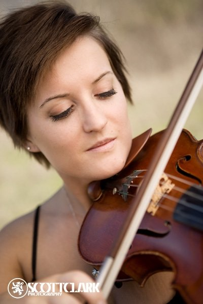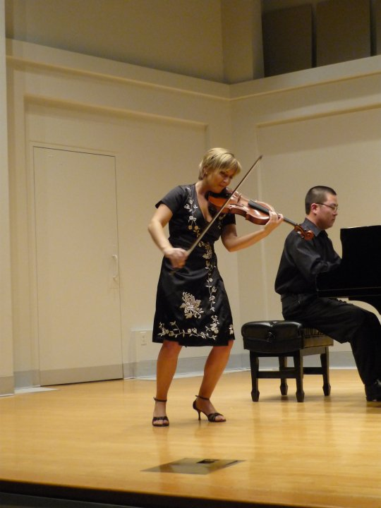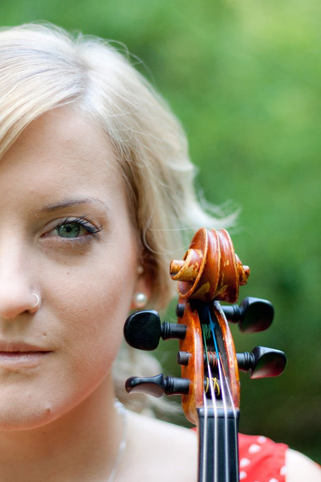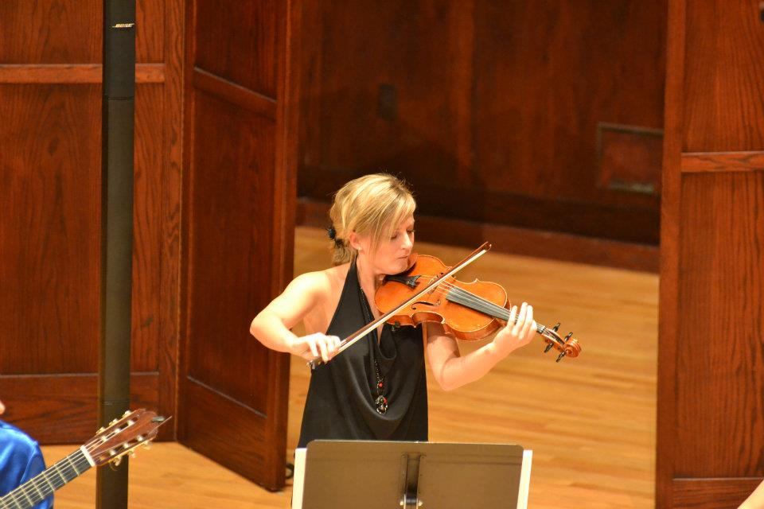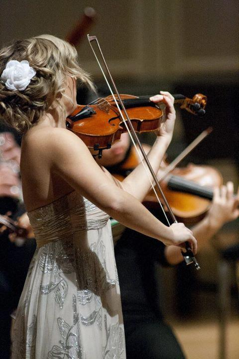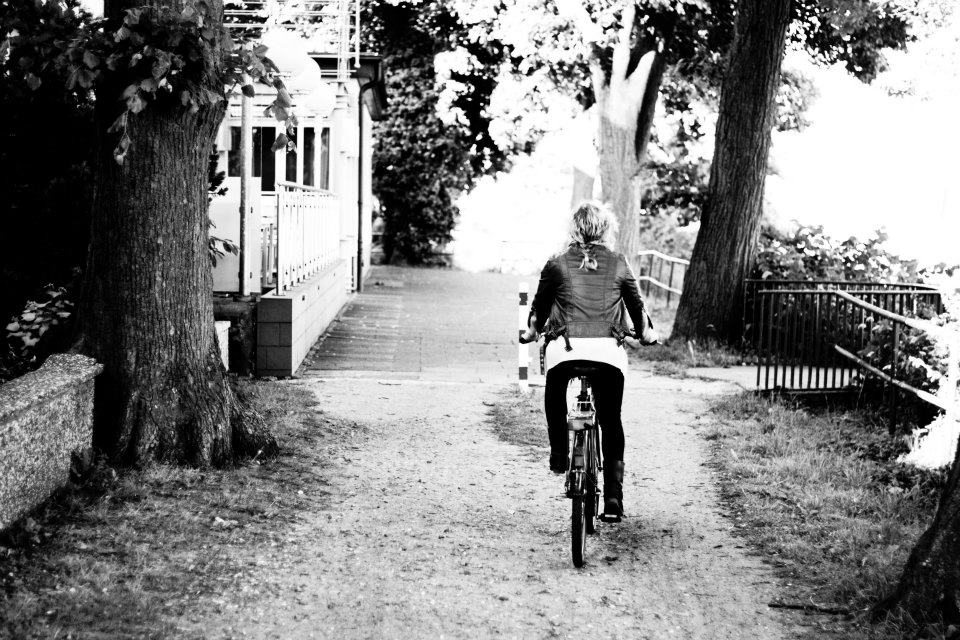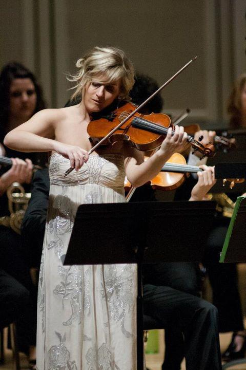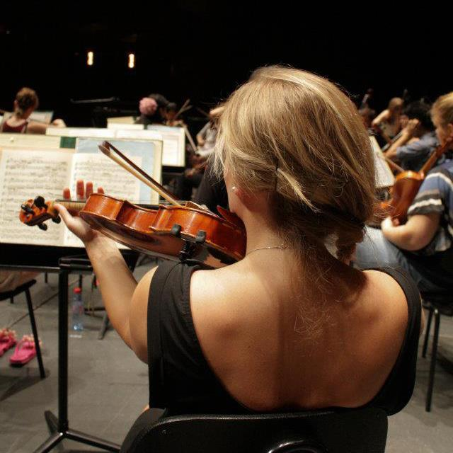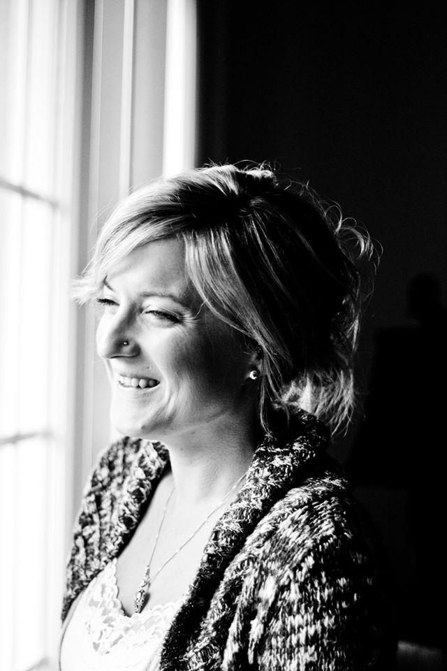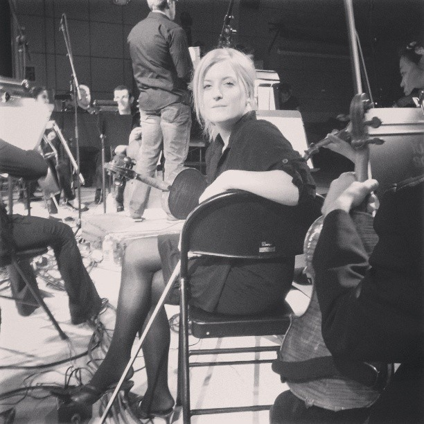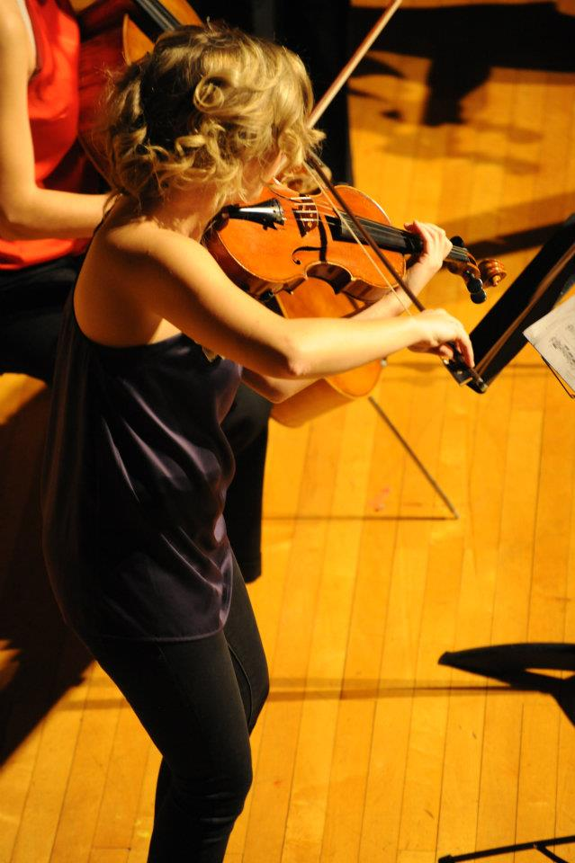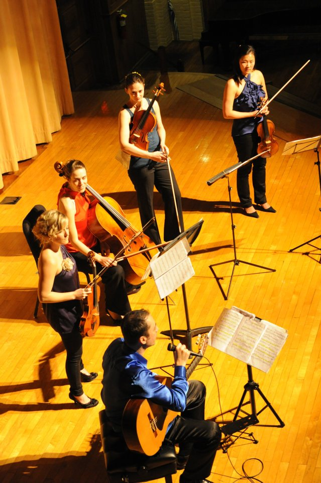</div>
      <h2>Videos</h2>
      <div class="video-gallery">
        <iframe width="640" height="360" src="https://www.youtube-nocookie.com/embed/DWdXPFVaYbo?rel=0&amp;amp;showinfo=0" frameborder="0" allowfullscreen="allowfullscreen"></iframe>
        <iframe width="640" height="360" src="https://www.youtube-nocookie.com/embed/-DlRGbx-FPU?rel=0&amp;amp;showinfo=0" frameborder="0" allowfullscreen="allowfullscreen"></iframe>
        <iframe width="640" height="360" src="https://www.youtube-nocookie.com/embed/Mt7kr1CqRpE?rel=0&amp;amp;showinfo=0" frameborder="0" allowfullscreen="allowfullscreen"></iframe>
        <iframe width="640" height="360" src="https://www.youtube-nocookie.com/embed/CE-jxjsmCT0?rel=0&amp;amp;showinfo=0" frameborder="0" allowfullscreen="allowfullscreen"></iframe>
      </div>
    </div>
  </div>
  <div class="footer_window"></div>
  <footer>
    <div class="footer-links-wrapper"><a href="https://www.instagram.com/sophiemariebird/" class="footer-link">Instagram</a><a href="http://sophievaleriebird.tumblr.com/" class="footer-link">Tumblr</a><a href="http://www.helsingborgskonserthus.se/" class="footer-link">Helsingborg Symphony Orchestra</a></div>
  </footer>
  <script src="https://ajax.googleapis.com/ajax/libs/jquery/1.12.0/jquery.min.js"></script>
  <script src="./assets/js/app.js"></script>
</body>